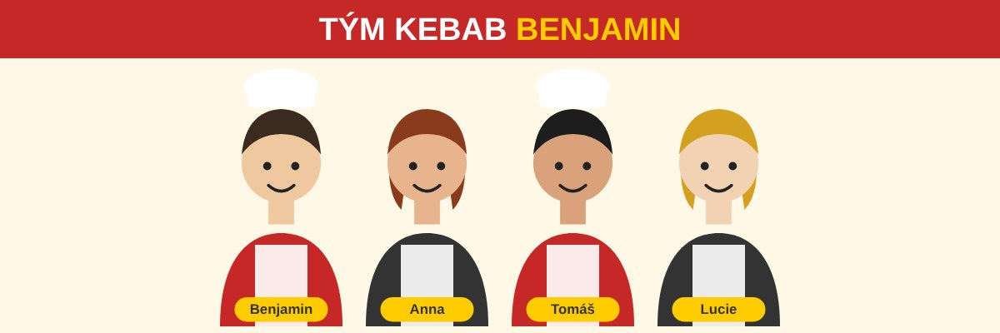

Náš příběh
Kebab Benjamin jsme otevřeli v roce 2026 hned po maturitě. Chtěli jsme dělat kebab, na který se bude chodit znovu: čerstvé maso, domácí omáčky a placky pečené každé ráno.
Maso marinujeme 24 hodin podle vlastního receptu a zeleninu nakupujeme každý den od místních dodavatelů. Žádné polotovary, všechno děláme sami.

Náš tým
Benjamin - majitel a hlavní kuchař
Benjamin je hlavní kuchař a majitel Kebab Benjamin. Má rád čerstvé suroviny a věří, že kvalitní jídlo je základem spokojených zákazníků.
Anna - zástupce majitele a marketing
Anna je zástupce majitele a stará se o marketing a sociální sítě. Její cílem je, aby se o Kebab Benjamin dozvědělo co nejvíce lidí a aby se k nám zákazníci rádi vraceli.
Tomáš - kuchař
Tomáš je kuchař, který se specializuje na přípravu masa a omáček. Jeho recepty jsou tajemstvím našeho úspěchu a zákazníci je milují.
Lucie - servírka
Lucie je servírka, která se stará o to, aby se zákazníci cítili pohodlně a byli spokojeni s naším servisem.
Proč k nám
- Čerstvé maso a zelenina
- Domácí omáčky
- Příjemná atmosféra
- Rychlá obsluha